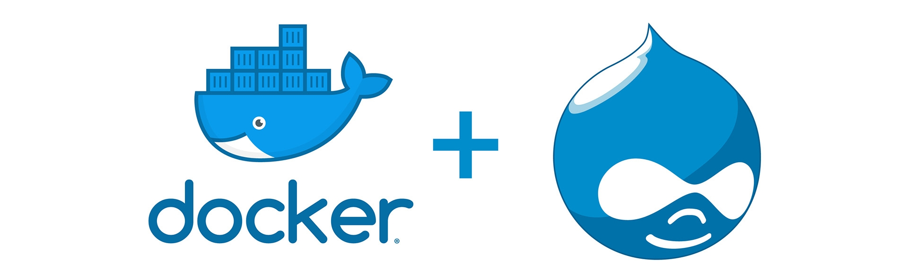

Introducción al Desarrollo con Docker y Drupal

# Presentación ## Juan Miguel Sosso @jmsosso https://jmsosso.drupal.network/
Introducción a Docker
## Imágenes - Contienen todo lo necesario para correr nuestra aplicación: - Dependencias - Archivos de configuración - Variables de entorno - Código (no para desarrollar) - Son estáticas y están formadas por capas - Imágenes públicas: [Docker Hub](https://hub.docker.com/search?q=&type=image) - Crear nuestras imágenes
## Dockerfile ``` # Use an official Python runtime as a parent image FROM python:2.7-slim # Set the working directory to /app WORKDIR /app # Copy the current directory contents into the container at /app COPY . /app # Install any needed packages specified in requirements.txt RUN pip install --trusted-host pypi.python.org -r requirements.txt # Make port 80 available to the world outside this container EXPOSE 80 # Define environment variable ENV NAME World # Run app.py when the container launches CMD ["python", "app.py"] ```
## Contenedores - Se crean a partir de una imagen - Son ligeros (no virtualización) - Son efímeros - Un solo servicio por contenedor - Múltiples contenedores de la misma imagen
## Volúmenes - Se utilizan para mantener los datos fuera de los contenedores - Pueden mapear un directorio del sistema de archivos o tener un nombre propio - Por ejemplo `/var/lib/mysql` para el contenedor de MySQL
## Puertos y subredes  - Los contenedores corren en su propia red - Se mapean los puertos necesarios al host
# Demo Correr la [imagen oficial de Drupal](https://hub.docker.com/_/drupal). - nombre:tag (por defecto latest) - vendor/nombre:tag ``` docker run --rm -p 8080:80 drupal ``` - Ejecución en segundo plano ``` docker ps -a docker stop docker rm docker start ```
Introducción a Docker Compose
## docker-compose.yml - Servicios: [MySQL](https://hub.docker.com/_/mysql) - [phpMyAdmin](https://hub.docker.com/r/phpmyadmin/phpmyadmin) - Volúmenes - Redes ``` version: '3' services: web: image: "drupal" ports: - "8081:80" db: image: "mysql" ```
## demo ``` docker-compose up -d docker-compose ps docker-compose stop | down ```
# Bonus https://github.com/owncloud-docker/server ``` docker run --rm -p 8084:8080 owncloud/server ```
¿Preguntas?